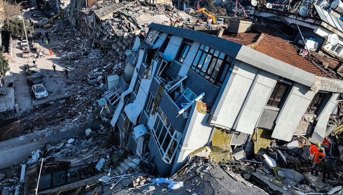
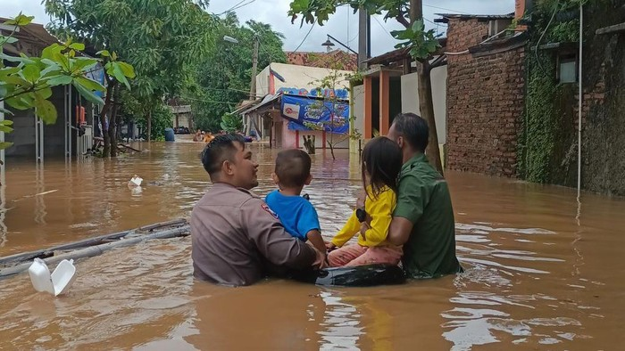
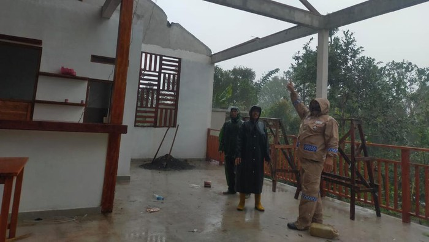

Sistem Informasi Bencana (SIB) adalah suatu sistem yang dirancang untuk mengumpulkan, memproses, dan menyebarkan informasi tentang bencana kepada masyarakat dan pihak-pihak terkait dalam upaya untuk mengurangi dampak bencana. Sistem ini terdiri dari beberapa komponen, seperti teknologi informasi, jaringan komunikasi, dan sumber daya manusia.
Tujuan utama dari SIB adalah untuk memberikan informasi yang akurat, tepat waktu, dan mudah dimengerti kepada masyarakat dan pihak-pihak terkait selama periode pra-bencana, selama bencana terjadi, dan juga setelah bencana terjadi. Hal ini akan membantu dalam pengambilan keputusan yang cepat dan tepat dalam menanggapi bencana, serta meminimalkan jumlah korban dan kerusakan yang disebabkan oleh bencana.
About
Bencana adalah peristiwa atau rangkaian peristiwa yang mengancam dan mengganggu kehidupan dan penghidupan masyarakat yang disebabkan, baik oleh faktor alam dan/atau faktor nonalam maupun faktor manusia sehingga mengakibatkan timbulnya korban jiwa manusia, kerusakan lingkungan, kerugian harta benda, dan dampak psikologis.
Definisi tersebut menyebutkan bahwa bencana disebabkan oleh faktor alam, non alam, dan manusia. Oleh karena itu, Undang-Undang Nomor 24 Tahun 2007 tersebut juga mendefinisikan mengenai bencana alam, bencana nonalam, dan bencana sosial.
Bencana alam adalah bencana yang diakibatkan oleh peristiwa atau serangkaian peristiwa yang disebabkan oleh alam antara lain berupa gempa bumi, tsunami, gunung meletus, banjir, kekeringan, angin topan, dan tanah longsor.
Bencana nonalam adalah bencana yang diakibatkan oleh peristiwa atau rangkaian peristiwa nonalam yang antara lain berupa gagal teknologi, gagal modernisasi, epidemi, dan wabah penyakit.
Bencana sosial adalah bencana yang diakibatkan oleh peristiwa atau serangkaian peristiwa yang diakibatkan oleh manusia yang meliputi konflik sosial antarkelompok atau antarkomunitas masyarakat, dan teror.
Information

Gempa Turki
Korban jiwa gempa Turki-Suriah jadi 50.000 orang,puluhan ribu hilang!
Gempa Sulawesi Tengah
Fenomena alam berupa gempa,tsunami, dan liquifkasi mengguncan kawasan Sulawesi Tengah. Peristiwa itu menjadi duka mendalam untuk Indonesia tahun 2018

Banjir Karawang
Hujan yang mengguyur Tanah Air terus menerus menyebabkan banyak daerah terendam banjir. Sakag satu yang paling terdampak banjir adalah kabupaten Karawang

Angin Kencan Buleleng
Angin kencan akibatkan longsong dan pohon tumbang di buleleng